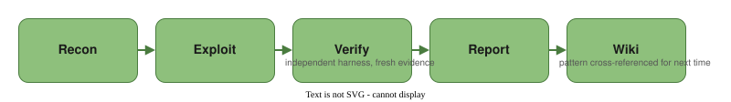

A Local AI Pentest Lab, Built to Learn
A write-up of a homelab I built to actually study vulnerabilities instead of reading about them: a local GPU, intentionally vulnerable VMs running real patched CVEs, and an open-source AI agent doing the recon-to-report cycle end to end. What follows is what I built, what happened the first time I ran it against a real CVE, and the bug I found and fixed along the way.
I wanted a place to actually study how vulnerabilities work, not just read about them, without a cloud bill timing how long I'm allowed to be curious. So the whole thing runs locally: a quantized build of Qwen3.8-Flash-Next served on a single RTX 3090 by Strata, an open-source inference engine that splits the model across GPU, RAM, and SSD. No API meter running, no per-token cost. Once the hardware's paid for, every extra hour the agent spends exploring, failing, and retrying costs electricity, not a bill.
What I built
Four pieces. The model is a quantized Coder build served with a full 256K-token context window by Strata, so a long, multi-stage engagement doesn't need constant trimming to fit. The targets are Proxmox VMs, each running one intentionally vulnerable app with a real, already-disclosed CVE, isolated on its own network segment, nothing live or unpatched, and nothing exploited without authorization I gave myself. The agent is Decepticon, an open-source multi-agent pentest tool that runs recon → exploit → verify → report on its own, with an independent verification stage that rebuilds its own fresh evidence before anything gets called confirmed. And every finding, technique, and lesson lands in a personal wiki afterward, cross-referenced, so a pattern seen once (an unsanitized string reaching a shell interpreter, say) gets recognized faster the second time it shows up somewhere else.

Running it against two real CVEs
Before using Decepticon, I started with PentAGI, a different open-source multi-agent pentest tool. I ran it against the DbGate target twice, once guided with a hint-bearing prompt and once left to find its own way in. Both runs eventually confirmed the vulnerability, but each took the better part of two days. That wasn't because the bug was hard to find. Its verification step kept re-running the same subtask that had already produced the proof instead of handing off to something independent, and its subtask-by-subtask model has no hard ceiling on how long a stuck loop can run. Decepticon ran against the same target with the same prompt and built an independently-verified report in under two hours. That gap settled which tool the lab actually runs on. For something meant to be re-run constantly, Decepticon's straight-to-target approach and hard step limit matter more than anything else.
Ruflo: an unauthenticated shell, start to finish
Ruflo is a workflow tool with a known, already-patched MCP bridge vulnerability
(CVE-2026-59726,
CVSS 9.8, affecting every version before 3.16.3, fixed in that release). Recon found an unauthenticated /mcp endpoint that handed over its
entire 249-tool inventory to anyone who asked, no login required. One of those tools,
terminal_execute, took a free-text command field with no schema
constraint on it. Exploit sent it an arithmetic expression as a marker, got the computed
result back in the response body, and had a working, unauthenticated remote shell inside
twenty minutes of recon starting.
Then it did the part I actually built this for: the verifier didn't just read the exploit's output and nod. It ran its own independent request, with its own fresh marker and its own arithmetic, roughly fifteen minutes later, and only wrote up the finding once that second proof landed.
DbGate: code injection through a script runner
DbGate is a database GUI with a scripting feature for calling a documented set of named
functions, exporting a table to CSV, say, by generating and running a small Node.js script.
Anonymous login is also a real, intentional feature for simple deployments, so getting a
token took no exploit at all. The actual gap (CVE-2026-47668, affecting versions through
7.1.8, fixed in 7.1.9; the lab's own conservative scoring landed at CVSS 8.2, since no
destructive action was tested, against a 10.0 in the public advisory) is that the endpoint
which runs one of these scripts never checks whether that token is allowed to run anything,
and the function name inside each script gets spliced into the generated JavaScript raw,
never checked against the real function list. So instead of calling a documented function,
Exploit supplied one that broke out of the generated code entirely. The one guard that code
sets, nulling the bare require identifier, didn't touch
module.require, the module object's own method, and that's what reached
child_process to run arbitrary commands. The verifier reproduced it with its
own token and its own marker, then a negative control confirmed the same route failed
cleanly on a harmless function name, ruling out a false positive.
| Target | Vulnerability | Affected / fixed | Severity |
|---|---|---|---|
| Ruflo (MCP bridge) | Unauthenticated command execution, no breakout needed: one tool dispatched a request string straight to a shell | < 3.16.3, fixed in 3.16.3 | Critical, CVSS 9.8 |
| DbGate (script runner) | Code injection in a legitimate scripting feature, reached through an unsanitized function-name field | ≤ 7.1.8, fixed in 7.1.9 | High, CVSS 8.2 (lab); 10.0 (public advisory) |

Where it got stuck, and what that taught me
Although the exploits were interesting to see, an earlier run mattered more, before the Ruflo engagement above went clean. The agent kept re-verifying work it had already proven, over and over, until it ran out of context entirely. Decepticon has a safety net built for exactly this case. It's supposed to automatically compact the conversation before that happens, but the net was silently broken. Tracing it down showed the error-handling code was mislabeling the overflow as a generic failure, so the one recovery path built for this exact situation never recognized it.
I fixed the misclassification in Decepticon's own source with Claude Code's help, and now it compacts correctly instead of failing the same way on repeat. A separate, still-unfixed bug: on another run, it repeated an already-correct conclusion 21+ times after the report was done. A hard cancel is the only way to stop that one, and it's a known failure pattern in agentic harnesses, more on that below.
It turns out this exact failure shape is already a studied problem, not something unique to my setup. A July 2026 paper, When Agents Do Not Stop: Uncovering Infinite Agentic Loops in LLM Agents, scanned 6,549 real LLM agent repositories and confirmed 68 of these loop failures across 47 of those projects. It's not specific to Decepticon either: I saw the same pathology, a model that can't recognize "this is already proven, stop," independently in PentAGI, a completely different agent architecture, on the same DbGate target. Finding and fixing a live instance of a named, studied failure class taught me more than any of the successful runs did.
Honest limits
Quantized isn't full-precision, and that's part of the point
Running a large model locally means a real quality trade-off against a hosted frontier model. A meaningful share of the bugs I ran into, including the loop above, trace back to friction that only shows up on a local or custom model provider, the path hosted-API users never really exercise. That's the actual lesson, not a footnote: local infra surfaces rough edges that a well-trodden hosted path hides.
"Zero cost" needs a caveat
There's no per-token meter, but the hardware isn't free. The honest framing is zero marginal cost per experiment, not zero cost overall, since the GPU and the rest of the homelab were a real upfront spend.
The point of all of it
The goal was never to watch an AI exploit something and call it a day. It's a repeatable space, cheap enough to run again and again, to actually study why a vulnerability works, why the tooling fails, and what both of those teach me, so the pattern is recognizable the next time it shows up somewhere else.
We're at a point where AI can do almost all of the doing for you. It's tempting to let that replace the slower work of actually understanding something. I think that's backwards. The value isn't in getting an agent to produce an answer. It's in using it to go deeper into why the answer is what it is, and staying curious enough to keep asking.
What's next
The write-ups above are dense enough that I'm feeding them into NotebookLM next, to generate a visual summary and slide deck out of the same material, a different way to study the same findings rather than a different set of them.